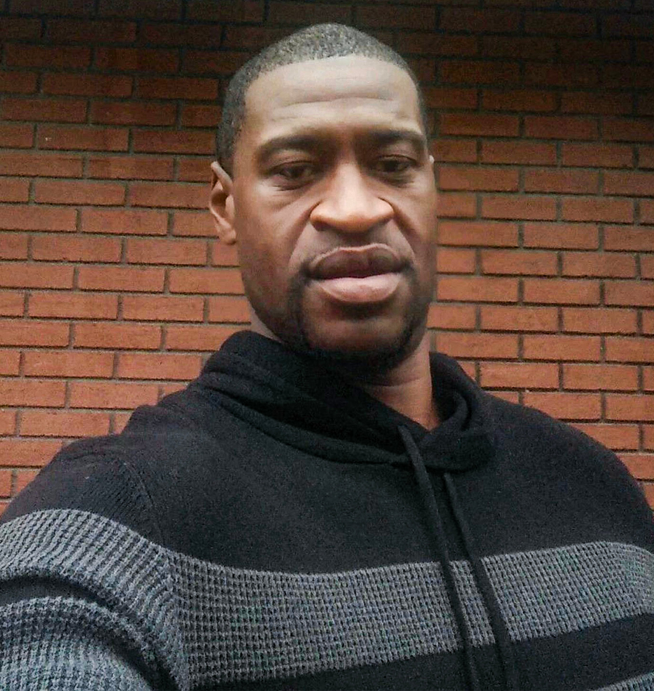

George Floyd
8 Minutes and 46 Seconds
Justice For George Floyd
- Age: 46
- Location of Death: Minneapolis, Minnesota
On May 25, 2020, a convenience store employee called the police on George Floyd who had bought cigarettes with an alleged counterfeit bill. Shorty after the call, two police officers arrived on the scene. Ex-officer, Thomas Lane, pulled his gun on Mr. Floyd immediately and continued to handcuff him. Once both officers tried to transfer Mr. Floyd to the squad car, he stiffened up and fell to the ground due to being claustrophobic. Ex-officer, Derek Chauvin, arrived at the scene and attempted to assist the other officers in detaining Mr. Floyd, but instead pulled him away from the car, causing him to fall on the ground. Chauvin then placed his knee between Mr. Floyd's head and neck. Ex officers, J. Alexander Keung and Tom Thao stood by and watched. Mr. Floyd repeatedly shouted "I can't breathe" and pleaded for his mother, as Chauvin held his knee there for 8 minutes and 46 seconds . Mr. Floyd took his last breath around the sixth minute. After Chauvin removed his knee, Mr. Floyd laid there motionless, with no pulse, and was pronounced dead about an hour later. Chauvin has been charged with second-degree murder along with other counts, while Lane, Keung, and Thao face charges of aiding and abetting second-degree murder and manslaughter.
How to Help
Donate Here:
Official George Floyd Memorial Fund
Sign a Petition Here:
Justice for George Floyd